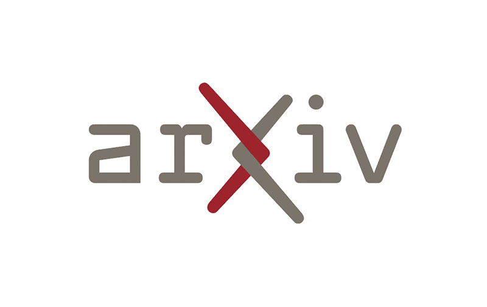

Open science, software citation, reproducibility best practices
Topics
- Software archival
- Software citation
- Venues for sharing and publication
- Best practices for reproducibility
Open science best practices
Sharing software and data openly has clear benefits to other and yourself.
A paper that isn’t accompanied by the software or data produced is just advertising. (Claerbout & Karrenbach, 1992)
People find reproducible results more trustworthy…
…and cite you more! (Piwowar & Vision, 2013)
Reduce duplicated effort and increase impact.
Open source software
We’ve talked about:
- environment management
- version control
- licensing
- documentation
- testing
- packaging and distribution
- software design practices
- optimizing code
Great! All done?

For research, we need one more step: archival of software and/or data.
Consider: what if you cite this, then someone modifies or deletes it?
Archiving
Live demo: connect GitHub to Zenodo

Software citation
Modern science and engineering research depend on software.
2009 survey: 91% of scientists consider software “important” or “very important” to research. (Hannay et al. 2009)
But, 40–70% of software used is not cited. (Pan et al. 2015, Howison et al. 2016)
Citing software & data is important.
Our research results depend on software and data—different versions of software and data changes our answers.
Without proper citations, your work is not reproducible.
Also, academia relies on citations for credit. (for better or worse)
Software citation principles

Smith AM, Katz DS, Niemeyer KE, FORCE11 Software Citation Working Group. (2016) Software citation principles. PeerJ Computer Science 2:e86 https://doi.org/10.7717/peerj-cs.86

Software citation principles
- Importance: software as important as other research products
- Credit & attribution: citations should facilitate scholarly credit and attribution to all contributors
- Unique identification: citation should include machine actionable, globally unique, interoperable, and recognized identification method
Software citation principles
- Persistence: Unique identifiers and metadata should persist
- Accessibility: Citations should facilitate access to software and associated metadata
- Specificity: Citations should facilitate identification of, and access to, specific version of software used
How to cite?
Name/description
Authors/developers
DOI or other unique/persistent identifier
Version number/commit hash
Location (e.g., GitHub repo)
(If there’s a paper describing it, cite that too.)
Where to cite?
In the text with the references/bibliography.

KE Niemeyer, “PyTeCK: a Python-based automatic testing package for chemical kinetic models”. Proceedings of SciPy 2016. https://doi.org/10.25080/Majora-629e541a-00c

KE Niemeyer, NJ Curtis, & CJ Sung. “pyJac: analytical Jacobian generator for chemical kinetics” (2017) Computer Physics Communications, 215:188–203. https://doi.org/10.1016/j.cpc.2017.02.004
Publishing your software
You’ve put all this effort into crafting your research software following best practices. How to get academic credit for this?
- Mention in research article
- Submit to domain-specific software journal: Computer Physics Communications, ACM Transactions on Mathematical Software, Journal of Statistical Software, Nature Methods, Geoscientific Model Development
- Archive independently
- Submit to Journal of Open Source Software
Journal of Open Source Software (JOSS)
- https://joss.theoj.org
- Developer-friendly journal for research software packages
- Affiliate of Open Source Initiative
- Open access, no fees: diamond/platinum open access journal

“If you’ve already licensed your code and have good documentation then we expect that it should take less than an hour to prepare and submit your paper to JOSS.”

JOSS paper submission

JOSS paper reviews

JOSS review

Reproducibility best practices
“Repro-packs”
Lorena Barba describes “reproducibility packages” associated with papers, sharing figures under CC-BY:
“For every figure that presents some result, we bundle the files needed to reproduce it — input or configuration files used to run the simulation(s) behind the result; code to process raw data into derived data; and scripts to create output graphs — and deposit them together with the figure into an open-data repository, such as Figshare. Figshare assigns the bundle a DOI, which we then include in the figure caption so readers can easily find the data and re-create the result. Our lab uses these packages as test beds for our in-house software, to verify that the results haven’t been compromised by software modifications. And because we maintain a public history of all changes, we achieve what one of my students calls ‘unimpeachable provenance’.”
My repro-pack practice
- Produce a single “repro-pack” for an entire paper, which contains:
- Python plotting scripts and associated results data
- Figures (PDFs for plots, always)
- Any other relevant data: input files, configuration files, etc.
- Upload to Zenodo under CC-BY license
- Cite using the resulting DOI in the associated paper(s)
Benefits
- Improving reproducibility and impact of your work
- Reviewers will love you with this one great trick!
- It also lets you reuse your figures without violating the journal copyright. (Yes, when published, the journal owns the paper and everything in it that isn’t licensed from somewhere else.)
How to cite/mention


CP Stone, AT Alferman, & KE Niemeyer. 2018. “Accelerating finite-rate chemical kinetics with coprocessors: comparing vectorization methods on GPUs, MICs, and CPUs.” Computer Physics Communications, 226:18–29. https://doi.org/10.1016/j.cpc.2018.01.015

D Behnoudfar & KE Niemeyer. 2025. “A single-domain approach for modeling flow in and around porous media applied to buoyant reacting plume formation and ignition.” Physics of Fluids, 37:012111. https://doi.org/10.1063/5.0248978

Best practice example
- Source code at github.com/SLACKHA/pyJac has
READMEwith basic usage - Full documentation website with API docs, installation guide, and examples: slackha.github.io/pyJac/
- Functional and performance testing suites built-in
- Software paper published with full theory details (https://doi.org/10.1016/j.cpc.2017.02.004)
- full source of paper also available via niemeyer-research-group.github.io/pyJac-paper/
- Data, figures, and figure scripts from paper available openly via Figshare: https://doi.org/10.6084/m9.figshare.4578010
Publishing and open access
Open-access journals
Open Access (OA)
Meaning: research output that is free to access/read
Types of open access
Green OA
self archiving
Gold OA
open access journal
Gold OA
Either fully open journal (ok) or hybrid (bad).
Typically—though not always—both require article processing charge (APC).
Oregon State University Library program covers fees for PeerJ journals.
Green OA
Meaning: publish in traditional (closed) venue, but also make available openly.
Where? eprint/preprint archives.



OSU Open Access policy
Oregon State has an Open Access policy:
In recognition of Oregon State University’s land-grant mission, the Faculty is committed to disseminating its research and scholarship as widely as possible. In addition to the public benefit of such dissemination, this policy is intended to serve faculty interests by promoting greater reach and impact for articles. The policy directs faculty to submit an electronic copy of the author’s accepted (post-peer review, pre-typeset) manuscript of their articles to OSU Libraries for dissemination via the ScholarsArchive@OSU institutional repository.
 Journal version
Journal version

Author-accepted version
Don’t post the journal version of a paper online!
In general when publishing an article, you transfer copyright of the content to the journal.
Protect yourself by self-archiving the author-accepted text and figures (via a repropack!).